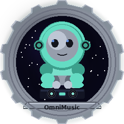
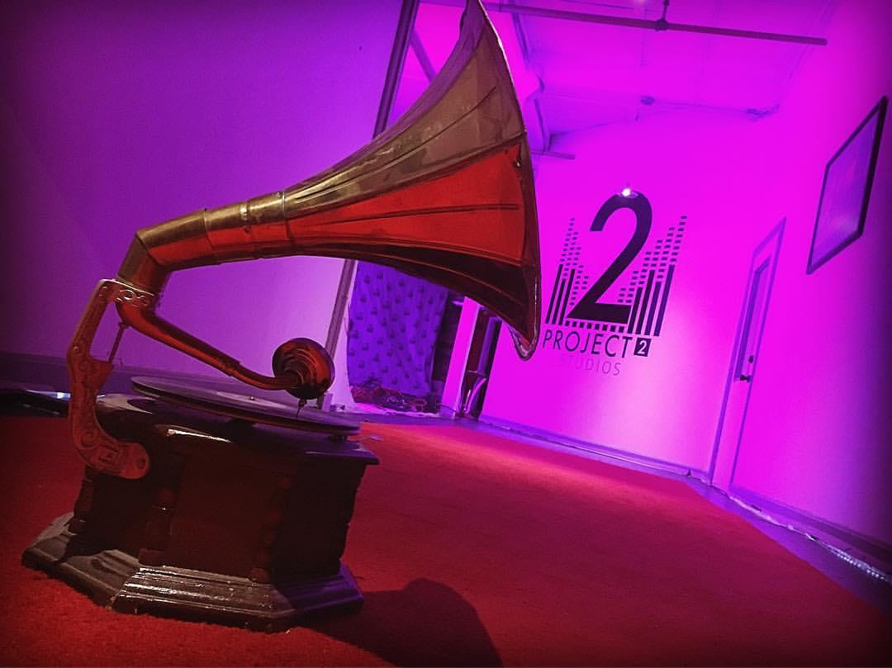

🔥
PC Tuning & Overclocking
Custom Hardware Optimization — Windows & Linux
I tune my own hardware from scratch. No presets, no auto-OC utilities — manual voltage curves, stress testing, and fan profiles until everything is stable under real workloads. I've done this across both Windows and Linux on the same hardware, so I know the tuning process on both platforms.
GPU — RTX 5070 Ti — +400 core, +5000 memory, 350W power limit. Custom fan curve balanced for thermals and noise. Stable under hours of ML training, rendering, and gaming
CPU — Ryzen 9 9800X3D — -30 curve optimizer, +200MHz boost override hitting 5.4GHz all-core. Fully stress-tested and stable. Those are serious numbers for a 3D V-Cache chip
RAM — Overclocked to 6000MHz, tuned and stability validated. The full system — CPU, GPU, and memory — is all manually dialed in and rock solid
Cross-Platform — Same hardware tuned and validated on both Windows and Linux. BIOS-level tweaks, OS-specific power management, driver configs on both platforms
RTX 5070 TiRyzen 9 9800X3DManual OCCurve OptimizerFan CurvesStress TestingBIOS Tuning
⚙
Linux Systems Engineering
CachyOS / Arch — Bare Metal
My daily driver is a custom-tuned Arch Linux (CachyOS) workstation. Every layer is configured by hand — kernel scheduler, sleep state management, pacman hooks, driver configs. It breaks sometimes. I fix it. That's the deal.
OS & Kernel — sched-ext bpfland scheduler, custom pacman hooks, modprobe configs, multi-monitor position persistence
ML Stack — CUDA 12.8, PyTorch nightly cu128, separate venvs for app vs ML workloads, Docker services
Gaming — Proton + DXVK, per-game launch configs, DX11 over DX12 for lower overhead, multi-monitor Wayland
Arch LinuxKDE Plasma 6WaylandNVIDIA 595DockerProton
🧠
AI Systems Engineering
Local LLMs, MCP Servers & AI-Augmented Development
I've been going deep on AI infrastructure — not just using ChatGPT, but building the systems around it. Running local LLMs on my own hardware, setting up MCP servers for tool orchestration, integrating AI into my actual development workflow, and building full applications with AI as a co-pilot. I'm a software engineer first — I've been writing code for 20 years — but AI is the biggest shift in how we build things since the internet, and I'm making sure I'm not left behind.
Local LLM Infrastructure — Running models locally on an RTX 5070 Ti with Ollama, vLLM, and custom inference pipelines. No cloud dependency for core AI work
MCP Server Architecture — Built custom Model Context Protocol servers for tool orchestration, knowledge retrieval, and multi-system integration
AI-Augmented Development — Using AI as a force multiplier for coding, debugging, architecture decisions, and rapid prototyping. Not a replacement for knowing how to code — an amplifier for someone who does
Vector Databases & RAG — ChromaDB knowledge bases with hundreds of documents, context-aware retrieval, session memory across conversations
ML Pipeline Management — PyTorch, CUDA 12.8, separate virtual environments for different ML workloads, model fine-tuning (RVC voice models, 6000 training steps)
ClaudeOllamaMCP
ChromaDBPyTorchCUDA
LLM InferenceRAGRVC
Prompt Engineering

AI-Powered Music Production Platform
A full desktop app for AI-assisted music production. Song generation, audio analysis, mixing and mastering, vocal production, voice conversion, image generation, video creation — all in one interface, all running locally on my RTX 5070 Ti. This is the project I built because the tools I wanted didn't exist.
Song Generation — SSE streaming, captcha solving, 73 few-shot genre examples
3-Tier Audio Analysis — Gemini, librosa, offline fallback with BPM voting and key detection
Mix & Master — 14 genre presets, per-stem EQ, LUFS-targeted mastering chain
Vocal Pipeline — 10-stage chain, RVC voice conversion, per-layer pitch detection
Stem Separation — Demucs + UVR5, de-reverb, de-echo, independent layer conversion
Image Gen — Local nunchaku, FLUX, SDXL backends. Zero cloud dependencies
Video Pipeline — LLM-directed shots, 54 color grades, beat-synced editing
Lyrical AI — 452 docs, 294 artist profiles, context-injected generation
PythonFastAPIpywebview
PyTorchCUDA 12.8Docker
ChromaDBDemucsRVC
FFmpegFLUXSSE
A cross-platform desktop system monitor I built and open-sourced. CPU and GPU temps, usage, VRAM, clock speeds, power draw — everything at a glance. Built it because I got tired of opening five different apps to check if my GPU was throttling. Runs natively on Linux, Windows, and macOS — which is rare for a tool this simple. There's a GitHub Actions workflow that automatically builds all three installers (AppImage, .exe, .dmg) on every release. Full details on the HeatSync page.
Live Telemetry — CPU, GPU, temps, usage with real-time sparkline graphs
True Cross-Platform — Linux AppImage, Windows .exe, macOS .dmg — all built automatically via GitHub Actions CI
Minimal Footprint — Sits at the top of the screen, stays out of the way
Desktop AppSystem APIsNVIDIA SMIGitHub Actions CICross-Platform
✦
Oblivion Remastered Modpack — Linux, Steam Deck & Windows
The only fully working modpack for Oblivion Remastered. 79 hand-tested mods, custom installer, and a Steam Deck profile that makes the game actually playable at a stable 30 FPS. Every other modpack for this game is either dead or broken. I wrote custom patches, fixed mod conflicts the authors didn't know about, and built an installer from scratch that handles the entire setup. The Deck version alone is worth it — this game ships "Verified" by Valve at 20 FPS with constant VRAM crashes. CHIM fixes all of it.
Cross-Platform Installer — One codebase, three platforms. Built in Python with tkinter — handles Nexus downloads, archive extraction, file routing, load order generation, and framework deployment across Linux, Windows, and Steam Deck. Detects the platform and adapts automatically
79 Curated Mods — Combat overhaul, magic rework, AI improvements, new quests, visual upgrades, QoL fixes. Every mod tested together, hand-ordered load order, custom patches where mods conflicted
Steam Deck Profile — Strips heavy visuals, adds 7 optimization mods, ships a custom Engine.ini with 50+ tweaked settings. Kills forced ray tracing, fixes the VRAM crash, caps loading screen FPS. Stable 30 at 800p
Framework Pinning — OBSE and UE4SS bundled at tested versions so Nexus updates can't break anything. Patched Plugins.txt format that every other guide gets wrong
PythontkinterNexus APIProtonUE4SSOBSEGitHub ActionsCloudflare Pages
🔥
CrockedNLoaded
Cooking Channel & Brand
A cooking channel I co-host with my friend CrockPotDaddy. I'm a professional chef, he's a home cook — we cook whatever sounds fun and talk trash while we do it. I designed and built the entire brand site from scratch at crockednloaded.com.
Brand Site — Dark modern design, ember particles, cursor glow, scroll animations
Responsive — Full mobile support, works on everything
The Concept — Chef vs. home cook, real personality, zero script
HTML/CSSJavaScriptBrandingResponsive
🎵
Music & Media
MACK3Y — Singer, Producer & COO of Project 2 Studios
I write, produce, and release music professionally under the name MACK3Y, distributed through DistroKid to all major platforms. I'm also the COO of Project 2 Studios, a media company focused on artist development, content production, and creative strategy.

Released Artist — Music professionally distributed via DistroKid to Spotify, Apple Music, YouTube Music, and all major platforms
Project 2 Studios — COO of a media company handling artist development, content production, and creative strategy
Full Pipeline — Writing, recording, mixing, mastering, cover art, video production — I handle every stage of the release process
DistroKidSpotifyApple MusicYouTube MusicProductionMixingMastering
🌐
Web Development & Brand Building
Design, Development & Digital Strategy
Every site in this portfolio was designed and hand-coded by me — no templates, no page builders. From this portfolio to the CrockedNLoaded brand site, OmniSuite product page, HeatSync product page, game guides hub, and the CHIM modpack page. I also manage social media strategy and content creation for brand growth — building engaged audiences through consistent content, platform-native formats, and understanding what drives engagement across YouTube, TikTok, Instagram, and Facebook.
Full-Stack Web — Responsive, mobile-first sites with custom animations, lightboxes, canvas effects, scroll reveals. All vanilla HTML/CSS/JS — no frameworks, no bloat
Brand Development — Complete brand identity for CrockedNLoaded: site design, social media presence, content strategy, audience building from zero
Social Media Strategy — Platform-specific content creation, engagement optimization, audience growth across YouTube, TikTok, Instagram, and Facebook
Product Pages — Purpose-built showcase pages for software projects with themed designs, interactive screenshots, and technical documentation
Content Hubs — Multi-game guides site, modpack documentation, build guides — all with game-matched aesthetics and data-driven JS rendering
HTML/CSSJavaScriptGitHub PagesResponsive DesignCloudflareBrand StrategySocial MediaContent Creation